벨기에 이야기 (3) - '엘 카미노 에스파뇰'
게시: 2026-07-27T06:30:16+09:00
펠리페 2세가 저지대에 대해 유독 가혹하게 대했던 것은 그의 성격이 잔인해서가 아니었습니다. 펠리페 2세는 무척 차분하고 냉정한 성격을 가진 일중독자로서, 스페인의 최전성기를 이끈 뛰어난 통치자였습니다. 가령 1571년, 스페인, 교황청, 베네치아, 제네바 등의 카톨릭 신성동맹이 그리스 서해안인 레판토(Lepanto)에서 오스만 투르크 함대를 격파하고 지중해의 패권을 지킨 것은 그의 노력에 힘입은 바가 큽니다. 다만 그는 약간 지나치다 싶을 정도로 경건하고 열성적인 카톨릭 신자로서, 유럽을 휩쓸던 종교 개혁으로부터 카톨릭을 지켜야 한다는 종교적 믿음을 가지고 있었습니다. 가령 1588년, 엘리자베스 1세의 영국으로 무적함대(Spanish Armada)를 보내 영국 정복을 꾀했던 것도, 드레이크의 해적질을 종식시켜 아메리카 식민지와의 교통로 안전 확보 측면도 있지만 본질적으로는 영국 성공회를 파멸시키고 영국을 다시 카톨릭 국가로 만들려는 신앙적 목적이 더 컸습니다.
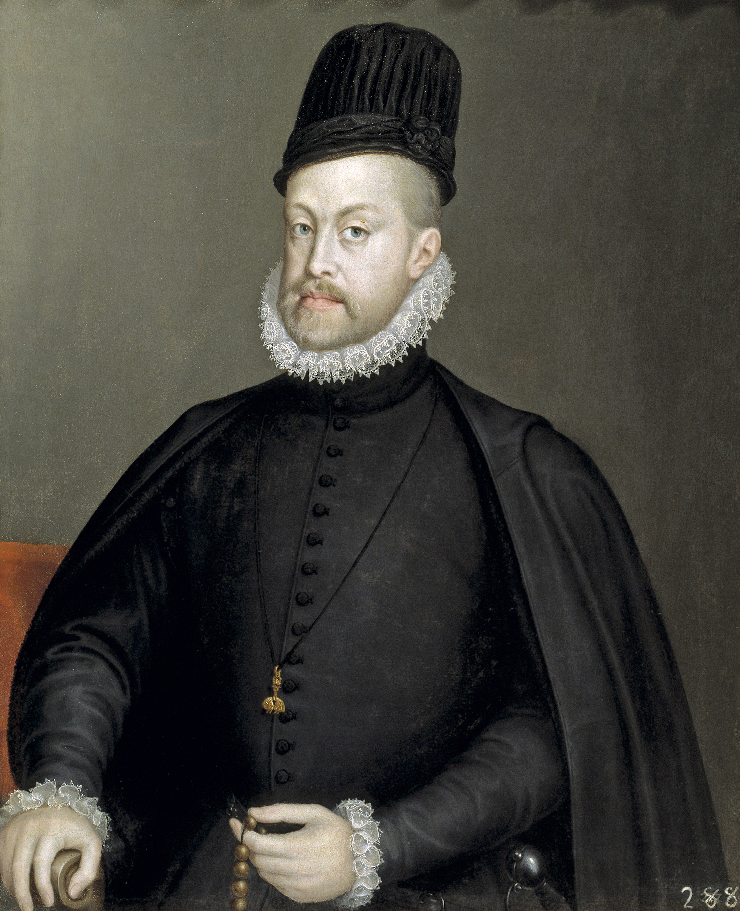
(펠리페 2세입니다. 엄숙하고 경건했던 펠리페 2세는 유럽의 제왕다웠던 아버지 카를로스 5세와는 대조적인 인물로서, 바야돌리드에서 태어나 스페인어가 모국어였고, 스페인어 외에는 능숙하게 구사하는 언어가 없었습니다. 그는 아버지와는 달리 사람들과 잘 어울리지 않았고, 소박하고 조용한 에스코리알(Escorial) 궁전에서 비서들과 함께 문서로만 그의 제국을 운영했습니다. 그가 서류의 왕(El Rey Papelero)이라고 불릴 정도로 문서를 중시했던 것은 사실 사람을 만나는 것을 싫어했기 때문이었습니다. 이 초상화에서도 검은 옷을 입고 있지만 그는 정말로 저렇게 소박하고 경건해 보이는 검은색 옷을 주로 입었다고 합니다.)
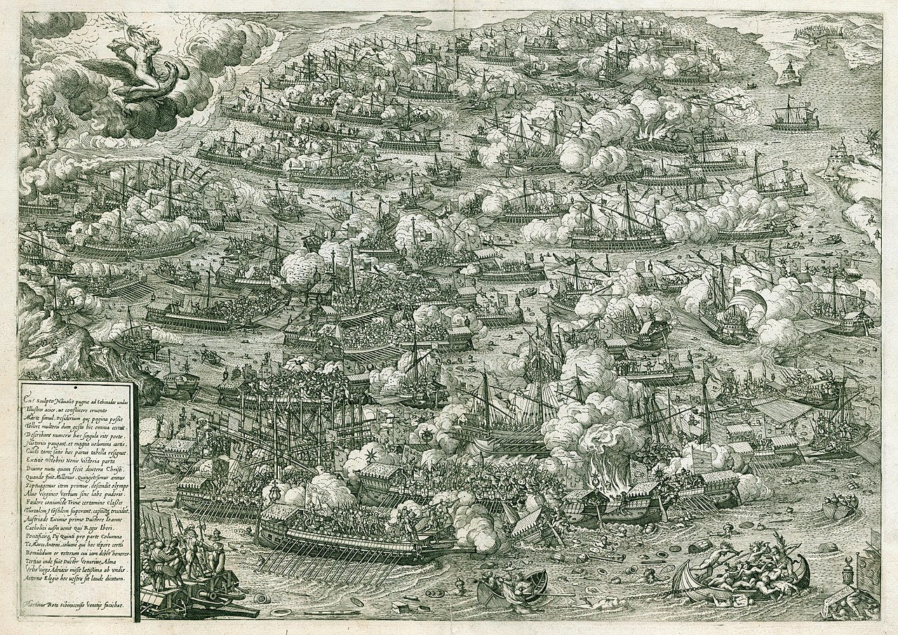
(1572년 베네치아에서 프린트된 레판토 해전의 모습입니다.)
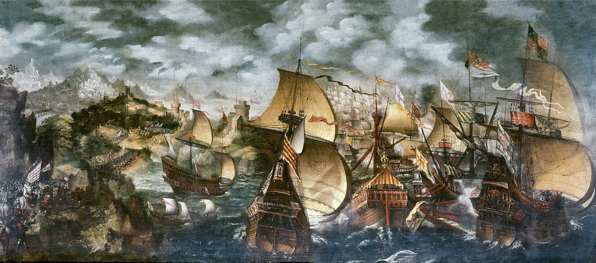
(1588년 무적함대가 영국 해안 근처에서 영국 함대와 싸우는 모습입니다. 왼쪽 아래 해안에 말을 탄 엘리자베스 1세의 모습이 그려져 있습니다.) 그의 아버지인 카를로스 5세 때는 저지대에 퍼진 개신교는 루터파였고, 아직 교세가 왕성하지 않을 때 일찌감치 탄압에 들어갔습니다. 그러면서도 저지대 귀족들과 가까운 사이였던 카를로스 5세는 저지대 귀족들 및 도시지역들의 자치권을 상당히 인정하여, 그런 종교 탄압에도 융통성을 두었습니다. 하지만 그렇게 루터파 개신교에 탄압이 집중되는 사이, 칼뱅파 개신교가 저지대 귀족 및 상인들 사이에 자리를 잡았습니다. 경건한 기독교 청년 펠리페 2세는 그런 상황을 도저히 참을 수 없었고, 생판 알지도 못하고 만나본 적도 없는 저지대 사람들의 사정을 봐줄 이유도 없었습니다. 그는 꽤 넓은 자치권을 누리던 저지대에 이단 심문소를 강화하고 이단자 처형을 늘렸을 뿐만 아니라, 저지대의 자치권을 축소시키고 세금을 늘렸는데, 이는 당연히 저지대에 큰 반감을 샀습니다. 그런 반감은 1566년 대대적인 성상 파괴 운동(Beeldenstorm)으로 표출되었습니다. 원래 이교도 사회였던 유럽을 쉽게 교화시키기 위해 카톨릭은 세부적인 부분에서는 토착화된 경향이 좀 있는데, 대표적인 것이 성상이었습니다. 그러나 썩은 카톨릭에서 벗어나자면서 시작된 개신교에서는 그런 성상을 무척 적대시했고, 저지대 사람들은 스페인의 폭압적 통치에 대해 항의하기 위해서 자기 동네 카톨릭 성당들의 성상을 파괴하는 폭력을 저질렀던 것입니다.
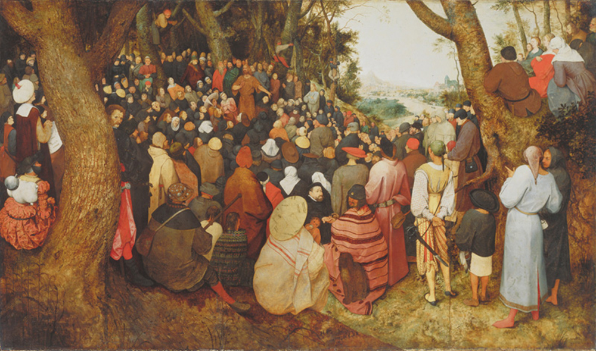
(저지대 화가 브뤼헐(Pieter Bruegel)의 1566년 작품인 '세례 요한의 설교'입니다. 이 그림에도 당시 저지대 상황이 그대로 노출됩니다. 설교를 듣는 사람들의 옷차림이나 숲과 강 등 주변 풍경의 모습은 예수님 시절 이스라엘이 아니라 16세기 저지대의 모습을 보여주는데, 이는 당시 개신교 예배 및 설교가 카톨릭 관할하에 있는 도시 경계 밖에 있는 시골 야외에서 이루어졌던 것을 묘사한 것입니다.)
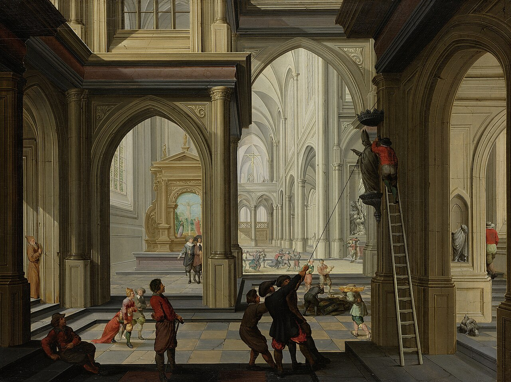
(이건 1566년의 성상 파괴 장면을 묘사한 1630년 그림입니다. 네덜란드 화가 Dirck van Delen의 작품입니다.)
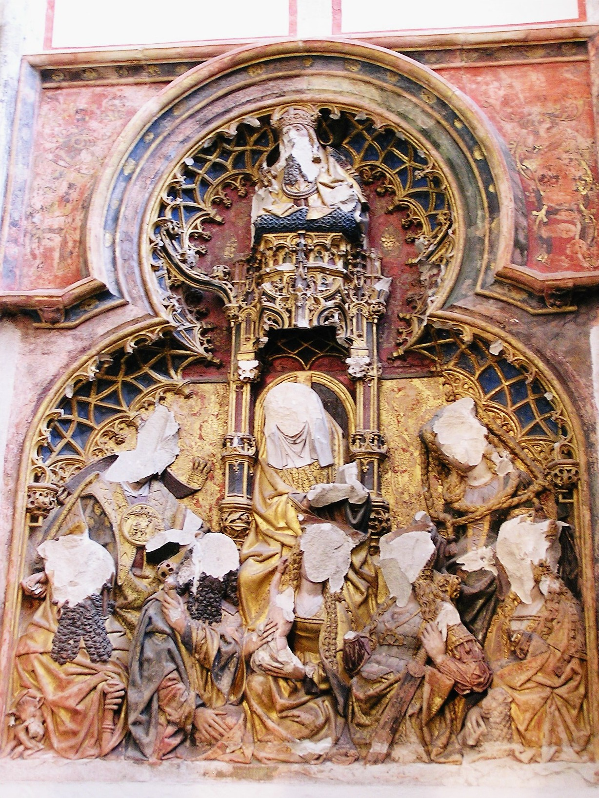
(위트레흐트(Utrecht) 대성당의 벽면을 장식한 성상 부조들의 얼굴이 훼손된 것을 보실 수 있습니다. 이 위트레흐트 대성당은 1580년에 카톨릭에서 칼뱅파 개신교회로 전환되었는데, 그래서인지 저렇게 훼손된 성상을 일부러 복원하지 않고 있습니다.) 이런 폭력 사태에 격분한 펠리페 2세가 내놓은 스페인식 해답은 알바 공작(Fernando Álvarez de Toledo, 3rd Duke of Alba)였습니다. 무자비한 알바 공작은 1567년 1만의 스페인 및 이탈리아인으로 구성된 군대를 이끌고 저지대 총독으로 부임하여 전에 없이 강력한 철권통치를 펼쳤습니다. 소요 평정 위원회(속칭 피의 위원회(Bloedraad))를 설치하여 저지대 개신교도 수천 명을 재판 없이 처형 및 투옥, 재산 몰수를 했을 뿐만 아니라, 저지대 온건파 귀족 에흐몬트 백작과 호른 백작을 체포해 브뤼셀 광장에서 공개 처형했습니다. 효율적인 식민지 폭동 진압은 현지 민중은 탄압하더라도 현지 지배층은 포섭하여 서로를 이간질시키는 것인데, 알바 공작은 그런 꼼수를 부리지 않고 저지대 민중과 귀족을 모조리 적으로 돌렸던 것입니다.
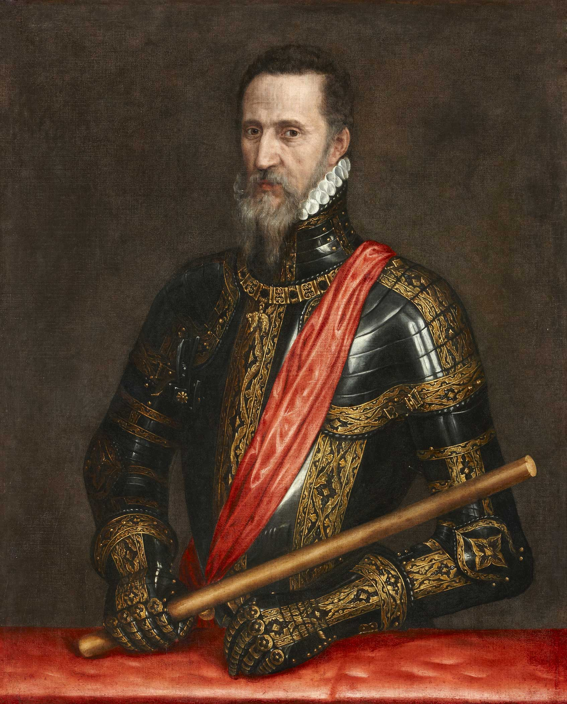
(플랑드르 화가 Willem Key가 1568년 그린 알바 공작의 초상화입니다. 보통 그의 작위명은 Alba라고 표기하는데 흥미롭게도 네덜란드어로는 Alva라고 합니다.)
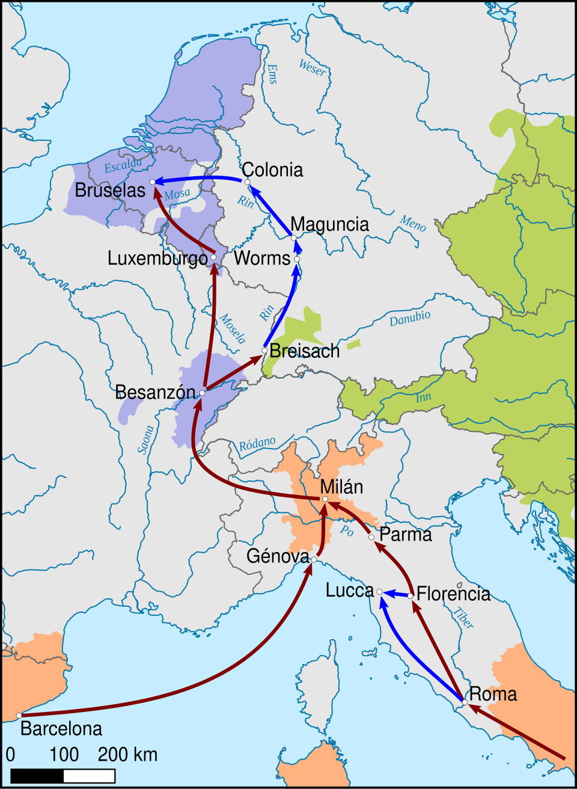
(이떄 알바 공작은 스페인에서 저지대까지 배를 타고 왔을까요? 아닙니다. 당시 대서양 바닷길은 드레이크로 대표되는 영국 해적들과 저지대의 개신교 해적들, 소위 '바다의 거지들'(Watergeuzen, 바터르회전) 때문에 위험했습니다. 결국 스페인은 대규모 병력을 파견할 때는 바르셀로나에서 출발하여 당시 합스부르크의 영토이거나 동맹국인 지역을 거쳤습니다. 즉 제노바에 상륙하여 거기서 밀라노를 거쳐 알프스를 넘고, 이어서 사보이 공국, 프량슈콩테(Franche-Comté, 스페인령 부르고뉴) 공국, 로렌(Lorraine) 공국을 거쳐 브뤼셀에 도착했습니다. 이 길을 스페인 가도(El Camino Español, Spanish Road)라고 부르는데, 이 경로는 17세기 중반까지 유지되다, 나중에 스페인이 도중의 영토들을 상실하거나 동맹이 깨지면서 결국 끊기게 됩니다.)
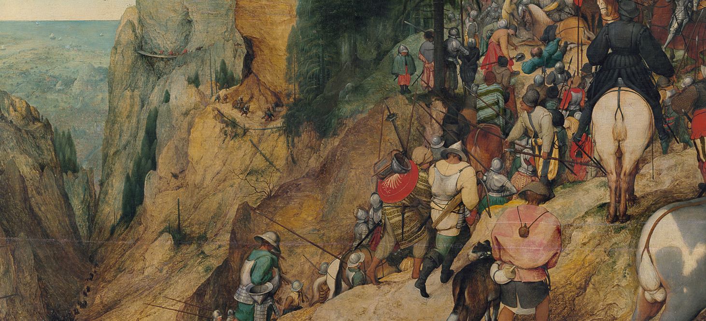
(그러니까 앞선 포스팅에서 보여드렸던 브뤼헐의 '사울의 회개'에서 보였던 길이 바로 스페인 가도이고, 저 군대는 알바 공작의 군대였던 것입니다.) 이런 폭정은 곧장 무장 반란을 불러 일으켰습니다. 알바 공작의 탄압을 피해 독일로 망명했던 '침묵공' 빌럼 폰 오라녜(Willem van Oranje)가 사재를 털고 주위의 지원을 받아 끌어 모은 용병대를 이끌고 1568년 봄, 저지대의 스페인군을 공격한 것입니다. 이것이 네덜란드 독립전쟁의 시작이었습니다. 빌럼은 전혀 예상 못했겠지만, 이 전쟁은 무려 80년 뒤인 1648년까지 이어지기 때문에 네덜란드 독립전쟁을 다른 말로 '80년 전쟁'이라고도 부릅니다. 이때 빌럼의 야심만만한 침공 작전은 서전인 헤일리헤를레이(Heiligerlee) 전투에서는 작은 승리를 거두었으나 곧 이어 알바 공작과 정면으로 붙은 예밍언(Jemmingen) 전투에서 1만2천의 병력 중 절반 정도가 죽거나 부상당하는 참패를 겪으며 박살이 나고 말았습니다.
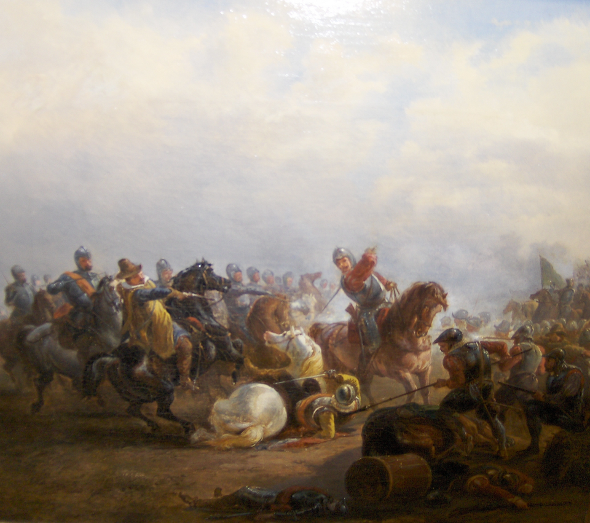
(헤일리헤를레이 전투입니다. 당시의 무장을 약간이나마 엿볼 수 있습니다. 당시는 화약 무기의 과도기로서, 저렇게 중세식 판금 갑옷을 입은 기사가 가벼운 군복 차림에 권총을 든 기병과 맞대결을 벌이기도 했었습니다.)
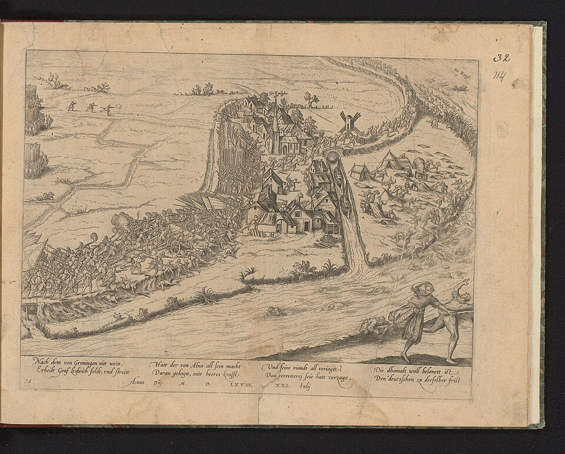
(예밍언 전투의 상황도입니다. 이 전투에서 노련한 알바 공작의 유인전술에 말려든 저지대 용병들이 철저하게 유린당했습니다. 알바 공작의 총병력은 약 1만5천 정도여서 저지대 용병들 1만2천보다 약간 우세했으나, 실제 전투에 투입된 알바 공작의 병력은 4천도 되지 않았습니다.)
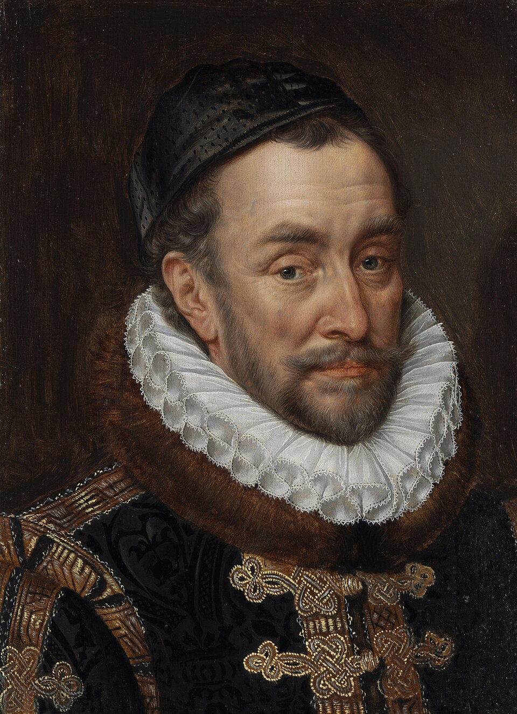
(빌럼 폰 오라네의 별명이 'Willem de Zwijger'(침묵공 빌럼)인 이유는 그가 원래 말이 없어서가 아닙니다. 이 별명은 1559년 스페인-프랑스간의 협약에 따라 스페인측 인질로 프랑스에 보내졌던 빌럼이 프랑스 국왕 앙리 2세와 벵센(Vincennes) 숲에 사냥을 갔다가, 거기서 빌럼이 카톨릭이고 펠리페 2세의 신하이므로 자기들 편이며 이미 그 계획을 다 알고 있다고 착각한 앙리 2세가 프랑스와 저지대에서 개신교도들을 모조리 척살하기로 펠리페 2세와의 합의에 대해 아무렇지도 않게 이야기했는데, 빌럼이 그 놀라운 이야기를 듣고도 침착하게 아무 놀라움을 표시하지 않았다는 일화에서 비롯된 것입니다.) 이렇게 시작하자마자 알바 공작에 의해 꺼져버리는 듯했던 저지대 독립 전쟁의 불씨가 다시 타오른 것도 알바 공작 덕분이었습니다. 알바 공작의 통치 중 최악의 수였던 신규 세금 징수가 시작되었던 것입니다. 그는 2년의 유예 기간 뒤에 1571년부터 모든 상업 거래에 10%의 세금을 부과하는 '10분의 1세(Tiende Penning)'를 도입했는데, 이는 사실 그의 군자금을 마련하기 위해 어쩔 수 없는 선택이었습니다. 그는 저지대 총독으로 부임할 때 무려 1만의 스페인 및 이탈리아인으로 구성된 군대를 끌고 왔는데, 알바를 파견할 때부터 펠리페 2세는 '현지에서 걷은 세금으로 모든 비용을 충당하라'고 명한 바 있었습니다. 당시 스페인은 오스만 투르크 및 프랑스 등과의 잦은 전쟁으로 재정이 파탄에 이른 상황이었기 때문이었습니다. 다른 모든 것은 참아도 세금은 못 참는 법입니다. 저지대 시민들은 처음에는 평화적으로 저항했습니다. 당시 주요 도시들의 상점 및 공장들과 함께, 세계적으로 유명하던 안트베르펜 증권거래소가 문을 닫았고, 상인들은 화폐 거래를 거부하고 물물교환을 시작했습니다. 화폐 거래가 없으면 세금도 없는 셈이었으니까요. 이런 저항으로 인해 알바 공작의 10분의 1세는 결국 거의 제대로 걷히지 못했습니다.
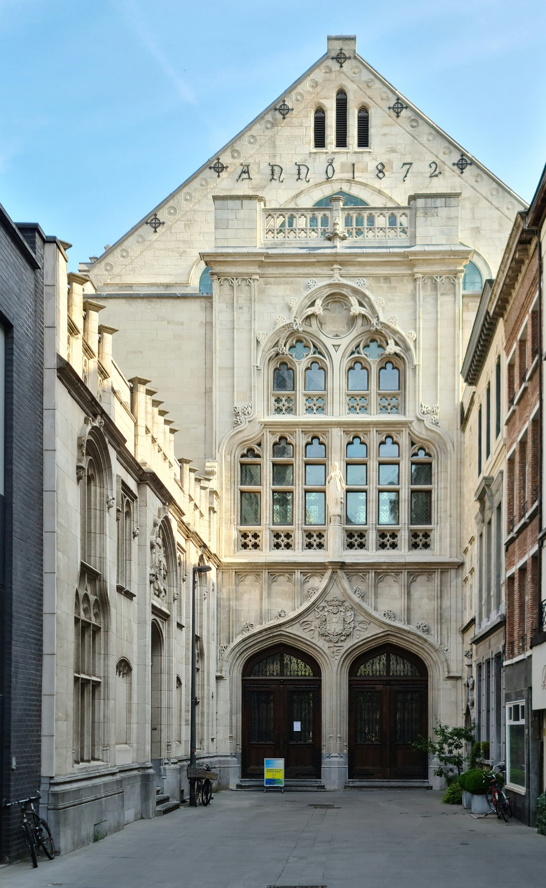
(세계 최초의 증권거래소인 안트베르펜 거래소입니다. 물론 이 건물은 16세기에 최초로 만들어진 그건 아니고, 19세기 중반 대화재 이후 1872년 다시 지어진 것입니다. 1997년 당시 브뤼셀 거래소(지금의 Euronext)와 합병되면서 지금은 그냥 이런저런 행사장으로 사용된다고 합니다.)
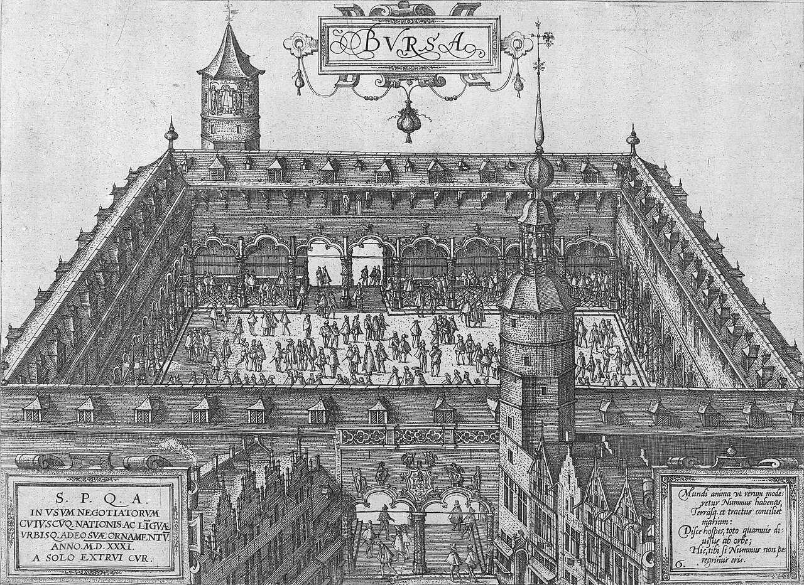
(1531년 세계 최초로 완성된 안트베르펜 거래소의 당시 모습입니다. 당시 저 거래소에서는 아직 주식회사들의 주식을 거래하지는 않았고, 주로 어음이나 국채, 상품 선물증서 등을 거래했습니다. 저 거래소를 네덜란드어로는 Handelsbeurs(한덜스뵈르스, 상품거래소)라고 하는데, handels는 거래, 무역이라는 뜻이고 beurs는 거래소라는 뜻입니다. 영어나 프랑스어로도 증권거래소를 bourse라고 하는데, 그 어원이 저기입니다. 안트베르펜보다 먼저 번영했던 플랑드르의 브뤼허(Bruges)에는 반 데어 뵈르서(Van der Beurse) 가문의 저택이 있었고, 이 저택 앞 광장에서 상인들이 모여 거래를 했다는 데서 "beurs"라는 이름이 생겨났다고 전해집니다.) 그러나 이런 평화적 저항만으로는 스페인의 압제로부터 벗어날 수 없는 법입니다. 결국은 무장 반란을 통해 스페인군을 내쫓아야 했는데, 앞서 빌럼이 주도한 침공작전에서 드러났듯이, 스페인 총창부대인 테르시오(Tercio)는 그야말로 유럽 최강의 군대였습니다. 이 답답한 상황 속에서 해결책은 뜻밖의 방향에서 찾아왔습니다. ** 벨기에 이야기가 제 원래 의도보다는 점점 길어지고 있네요. 실은 저도 왜 저지대가 네덜란드와 벨기에로 찢어졌는지, 찢어질 때도 왜 그 국경이 주민들의 언어도 아니고 민족도 아닌 이상한 기준으로 정해졌는지 궁금하여 찾다보니 여기까지 왔습니다. 삼천포로 새고 있다는 느낌이 강하긴 합니다만, 저도 조사하면서 꽤 재미있었으니, 재미있게 읽어주시면 고맙겠습니다. Source : https://en.wikipedia.org/wiki/Eighty_Years%27_War https://en.wikipedia.org/wiki/Spanish_Road https://en.wikipedia.org/wiki/William_the_Silent https://en.wikipedia.org/wiki/Battle_of_Heiligerlee_(1568) https://en.wikipedia.org/wiki/Battle_of_Jemmingen https://nl.wikipedia.org/wiki/Tiende_Penning https://en.wikipedia.org/wiki/Fernando_%C3%81lvarez_de_Toledo,_3rd_Duke_of_Alba https://en.wikipedia.org/wiki/Stock_Exchange,_Antwerp https://en.wikipedia.org/wiki/Beeldenstorm